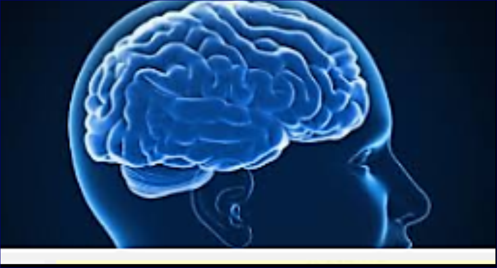

la rigueure et l'excellence au service d'education de vos
enfants et tout cela dans un environement idéal
Le groupe scolaire UNIVERS SCIENTIFIQUE est un etablissement qui vise l'excellence
Chez UNIVERS SCIENTIFIQUE nous sommes specialisés dans la formation des candidats pour
les differents examens regional et national. Nos differentes strategis nous permet d'optimiser
les chances de nos candidats. Nous avons regroupés une equipe constituer des meilleurs instructeurs
du pays. Chacuns d'entres eux étant expert dans sa matiere. Nous avons etablie un système qui
permet à nos eleves une assimilation de qualité. Pour nous la reussite de nos eleves necessite une
colaboration entre parants et encadreurs pour offrir à l'enfant un environement ideal à l'ecole
et à domicile.
Durant les derniers années nous avons fait les meilleurs resultats de notre localité durant les
differents examens. Chez nous les chances de reussites des vos enfants sont de 77%. Cela s'explique
par notre experience en la matiere. Pour nous la l'education est une science à part entier.
Le cerveau humain, un organe incroyablement complexe. Mais son etude nous permet d'approfondir
nos connaissances sur la façon dont l'être humain capte les informations. Et cela nous permet
d'ameliorer nos methodes d'enseignements. Connaitre ce dont l'enfant à besoin est la meilleur
façon de lui offrir des conditions d'apprentissage surmesures.

La formation de nos eleves dans tout les aspects demeure notre priorité.
C'est pour cela que nous investissons dans des conferences et formations
en partenariat avec certains des plus grande experts au monde venuent de
toutes les horizons. A UNIVERS SCIENTIFIQUE nous mettons tout en oeuvre
tout un ensemble de strategis pour optimiser les competences de nos eleves
UNIVERS SCIENTIFIQUE l'ecole de l'avenir. Contactez-nous pour que Nous
et construisons ensemble l'avenir de nos enfants.
.jpg)
.jpg)
.jpg)
.jpg)
.jpg)